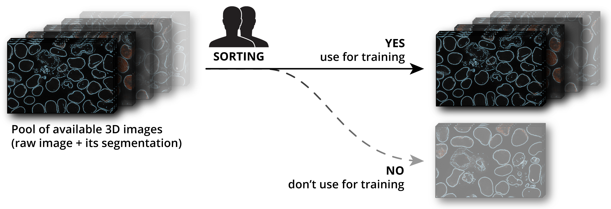
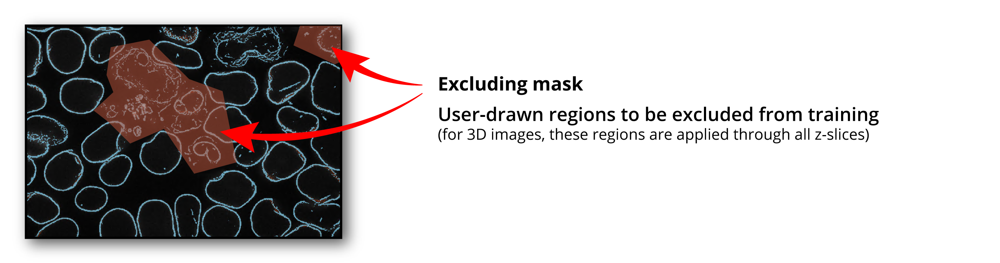
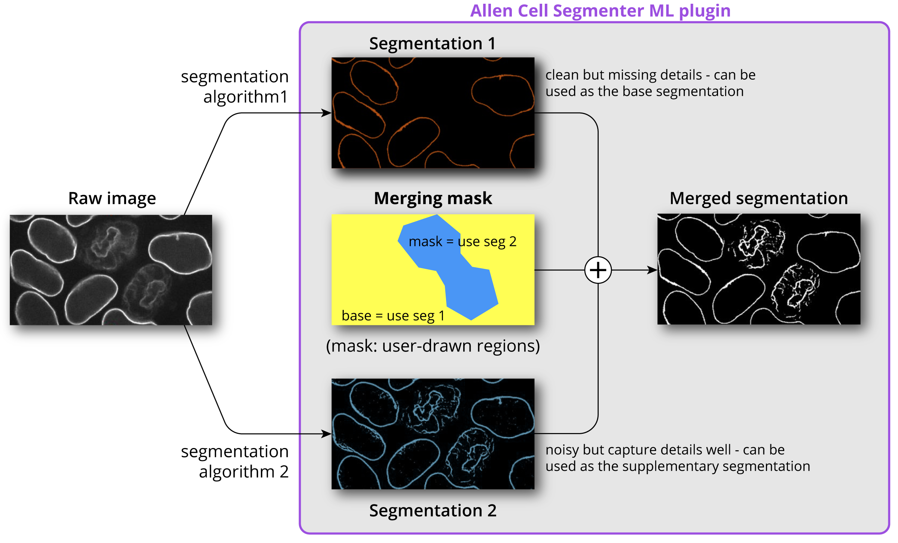

Overview¶
The Segmenter ML plugin is based on the iterative deep learning workflow of the Allen Cell & Structure Segmenter and CytoDL, both are developed at the Allen Institute for Cell Science:
Allen Cell & Structure Segmenter is a Python-based open-source toolkit for 3D segmentation of intracellular structures in fluorescence microscope images
CytoDL is a codebase unifying deep learning approaches for understanding 2D and 3D biological data as images, point clouds, and tabular data
The Allen Cell Segmenter ML plugin has 3 main modules: Curation, Training, and Prediction.
1. Curation¶
This module assists user in curating training dataset through manual sorting, excluding, & merging image data
Data curation step is important as a model’s performance is directly tied to the training data’s quality
a. Sorting
Review raw images and corresponding segmentations
Select only the high-quality images to be used as training data

b. Excluding
Select regions within an image to exclude from training
Maximize usable data by not rejecting the entire image but just the problem regions

c. Merging (overwriting)
If a raw image has two segmentations of the same cellular structure produced by different algorithms to target specific morphologies, Merging allows users to:
Select one of the segmentations to be the base segmentation
Draw shape(s) to indicate region(s) from the supplementary segmentation to overwrite the same region(s) in the base segmentation, effectively merging the two segmentations into a single ground-truth segmentation to be used for training
For 3D images, these regions are applied through all z-slices

2. Training¶

This module allows users to train an ML 2D or 3D segmentation model from scratch or fine-tune (iteratively) an existing 2D or 3D segmentation model**–whether their own or a pre-trained model provided by us–using their own data.
3. Prediction¶

This module allows users to apply the trained ML model from the previous step, or a pre-trained model, to generate segmentation predictions on raw images that the model has not previously seen.